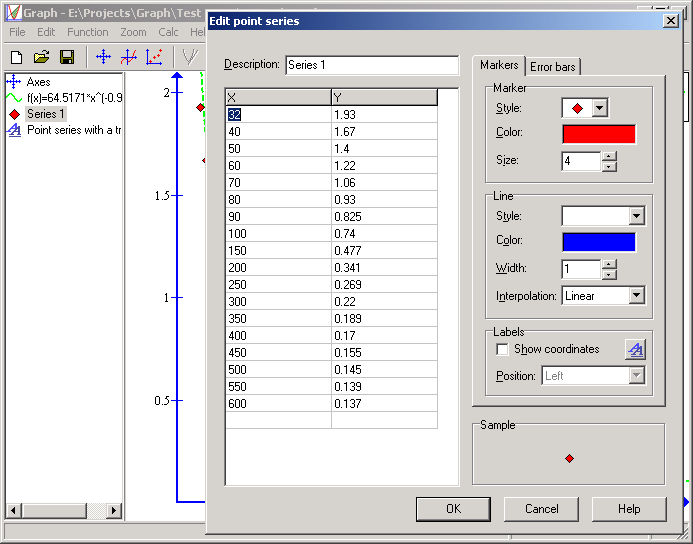

It is possible to add series of points to the coordinate system. The points are given by their x- and y-coordinates. The user can choose between different types of markers and lines between the markers.